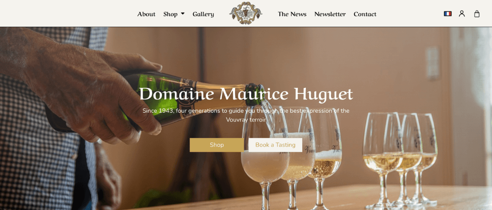

CASE STUDY / CLIENT WORK / LEGACY
Vouvray Huguet
フランスのワイナリー向けに制作した、英語・フランス語対応のECサイト。

- WordPress
- Divi
- WooCommerce
- Multilingual Content
Problem
ワイナリーの情報と商品を英語・フランス語で提示し、ワインを分類して閲覧・購入できる構成が必要でした。
Research
商品分類、対象地域、必要な言語、Home・About・Shop各ページの役割を整理しました。
Planning
WordPressとDiviを土台に、WooCommerceの商品分類と多言語コンテンツを組み合わせる構成を採用しました。
Implementation
Home、About、Shopの実装、Diviの調整、商品ページと購入導線の構築を担当しました。ソースコードは公開していません。
Result
英語・フランス語の情報と商品分類を備えたECサイトを公開しました。当時の制作サイトは現在オフラインで、掲載画像は制作時の記録です。
Reflection
複数言語とECを同時に扱う際は、翻訳だけでなく商品分類、通貨圏、更新作業まで含めて情報設計する必要があると学びました。